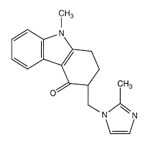

Laboratorio Rossetto
30 años de compromiso con la salud
Desarrollos
Comprometidos con la salud, nuestro laboratorio se encuentra arduamente trabajando para continuar en la vanguardia en lo que a nuevos tratamientos refiere. Por ello podemos transmitir orgullosamente los nuevos desarrollos en los que nos encontramos trabajando de cara al año 2025. Entre ellos podemos nombrar:
Ceftobiprol medocaril sódico
El ceftobiprol es una cefalosporina de quinta generación con un amplio espectro de acción contra bacterias grampositivas y gramnegativas. Su uso principal es en infecciones graves, como la neumonía adquirida en la comunidad y la neumonía intrahospitalaria (excluyendo la asociada a ventilación mecánica).
Mecanismo de acción

Inhibición de la síntesis de la pared celular bacteriana
Ceftobiprol actúa uniéndose a las proteínas de unión a penicilinas (PBPs), bloqueando la transpeptidación, un paso clave en la formación de la pared celular bacteriana. Esto provoca la desestabilización de la pared celular y la muerte de la bacteria (efecto bactericida).
Amplio espectro de acción
- Grampositivos: Activo contra Staphylococcus aureus, incluyendo cepas sensibles y resistentes a meticilina (SARM), Streptococcus pneumoniae y otros estreptococos.
- Gramnegativos: Eficaz contra Escherichia coli, Klebsiella pneumoniae y otras enterobacterias, aunque con menor actividad frente a Pseudomonas aeruginosa.
- Tiene una alta afinidad por PBP2a y PBP2x, que están involucradas en la resistencia a meticilina en S. aureus y la resistencia a penicilina en S. pneumoniae.
Semaglutida
La semaglutida es un agonista del receptor del GLP-1 (péptido similar al glucagón tipo 1) utilizado en el tratamiento de la diabetes mellitus tipo 2 y en el control del peso corporal en personas con obesidad o sobrepeso.
Mecanismo de acción
Estimulación del receptor de GLP-1
La semaglutida actúa activando los receptores del GLP-1 en el páncreas y otros tejidos, lo que produce varios efectos beneficiosos:
- Aumento de la secreción de insulina: Estimula la liberación de insulina de las células β del páncreas en respuesta a la glucosa, mejorando el control glucémico.
- Inhibición de la secreción de glucagón Reduce la producción hepática de glucosa al inhibir la secreción de glucagón en las células α pancreáticas.
- Retraso en el vaciamiento gástrico Ralentiza la digestión, lo que contribuye a una menor elevación posprandial de la glucosa y mayor sensación de saciedad.
- Efecto sobre el sistema nervioso central Actúa en el hipotálamo disminuyendo el apetito y la ingesta calórica, lo que favorece la pérdida de peso.
Ceftriaxona
La ceftriaxona es una cefalosporina de tercera generación con un amplio espectro de acción contra bacterias grampositivas y gramnegativas. Se usa en el tratamiento de diversas infecciones graves y en profilaxis quirúrgica.
Mecanismo de acción

Inhibición de la síntesis de la pared celular bacteriana
La ceftriaxona actúa uniéndose a las proteínas de unión a penicilinas (PBPs), interfiriendo con la formación de la pared celular de las bacterias. Esto debilita la estructura de la bacteria y provoca su lisis y muerte (efecto bactericida).
Amplio espectro de acción
- Grampositivos: Streptococcus pneumoniae, Streptococcus pyogenes, Staphylococcus aureus (pero no SARM).
- Gramnegativos: Neisseria meningitidis, Neisseria gonorrhoeae, Haemophilus influenzae, Escherichia coli, Klebsiella pneumoniae y otras enterobacterias.
- Actividad en el sistema nervioso central (SNC): Puede atravesar la barrera hematoencefálica, lo que la hace útil en el tratamiento de meningitis bacteriana.
Cefepime
El cefepime es un antibiótico beta-lactámico de la familia de las cefalosporinas de cuarta generación. Se utiliza principalmente para el tratamiento de infecciones bacterianas graves, incluyendo neumonía, infecciones urinarias complicadas, sepsis e infecciones intrahospitalarias.
Mecanismo de acción

Inhibición de la síntesis de la pared celular bacteriana
El cefepime actúa uniéndose a proteínas de unión a penicilinas (PBPs), esenciales para la síntesis de la pared celular bacteriana. Esto inhibe la transpeptidación y debilita la estructura de la pared celular, provocando la lisis y muerte de la bacteria (efecto bactericida).
Amplio espectro de acción
- Activo contra bacterias grampositivas (como Staphylococcus y Streptococcus).
- Alta actividad frente a bacterias gramnegativas, incluyendo Pseudomonas aeruginosa.
- Mayor estabilidad frente a β-lactamasas en comparación con generaciones previas de cefalosporinas.
Ondansetron
El ondansetrón es un antiemético que pertenece al grupo de los antagonistas selectivos de los receptores de serotonina 5-HT₃. Su principal función es prevenir y tratar las náuseas y vómitos inducidos por quimioterapia, radioterapia y postoperatorios.
Mecanismo de acción
Bloqueo de los receptores 5-HT₃ El ondansetrón actúa como antagonista selectivo de los receptores de serotonina 5-HT₃, que están localizados en:
- Sistema nervioso central (SNC) → En el área postrema del bulbo raquídeo (zona gatillo quimiorreceptora del centro del vómito)
- Sistema nervioso entérico (intestino delgado y estómago), en las terminaciones nerviosas del nervio vago.
Reducción del reflejo del vómito: Durante la quimioterapia o radioterapia, se libera serotonina (5-HT) en el intestino delgado, lo que activa los receptores 5-HT₃ y envía señales al cerebro para inducir el vómito. El ondansetrón bloquea estos receptores, impidiendo la activación del centro del vómito en el SNC.
Efecto antiemético: Como resultado, el ondansetrón previene y alivia las náuseas y vómitos causados por quimioterapia, radioterapia y anestesia postoperatoria.
Dipirona
La dipirona (también conocida como metamizol) es un analgésico, antipirético y espasmolítico. Se utiliza principalmente para el tratamiento del dolor moderado a severo y la fiebre alta que no responde a otros antipiréticos.
Mecanismo de acción

Inhibición de la síntesis de prostaglandinas
- La dipirona actúa inhibiendo la enzima ciclooxigenasa (COX-1 y COX-2), reduciendo la producción de prostaglandinas, sustancias que median el dolor, la fiebre y la inflamación.
Acción sobre el sistema nervioso central (SNC)
- Actúa en el sistema nervioso central modulando la transmisión del dolor en la médula espinal y el cerebro.
Efecto antipirético
- Actúa a nivel del hipotálamo, inhibiendo la producción de prostaglandinas en el centro termorregulador, lo que ayuda a reducir la fiebre.
Efecto espasmolítico
- Relaja los músculos lisos de órganos como el tracto gastrointestinal y el sistema urinario, ayudando en casos de cólicos renales o biliares.